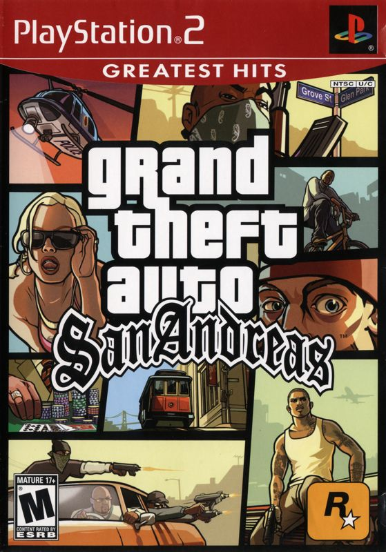

Grand Theft Auto: San Andreas (também conhecido como GTA San Andreas, GTA SA ou simplesmente San Andreas) é um videogame desenvolvido pela Rockstar North e lançado em 26 de outubro de 2004 pela Rockstar Games. É o sétimo título da série Grand Theft Auto e o terceiro jogo do Universo 3D da série. É a sequência de Grand Theft Auto: Vice City e a prequela de Grand Theft Auto: Liberty City Stories e Grand Theft Auto III. Foi lançado na mesma data que Grand Theft Auto Advance. GTA San Andreas se passa no estado fictício de San Andreas.
Em 11 de novembro de 2021, o jogo foi relançado para consoles de 8ª e 9ª geração em homenagem ao 20º aniversário de Grand Theft Auto III, sob o título Grand Theft Auto: San Andreas – The Definitive Edition, incluído no pacote The Definitive Edition.
San Andreas tem 6 por 6 quilômetros, ou 36 milhões de metros quadrados, de extensão. “Isso é apenas o mapa externo e não inclui os locais internos do jogo, que são muitos”. Além disso, o jogador não fica restrito à área povoada do mapa. Ele pode pegar um barco ou avião e viajar em qualquer direção, até onde quiser.
Os pedestres no jogo foram criados para reagirem mais às ações do jogador e até mesmo à aparência que ele escolher para o CJ. O produtor Dan Houser, ao falar sobre dar ao CJ um “penteado ridículo”, comentou que “se você tiver um penteado ridículo, as pessoas vão dizer: “Você está ridiculo!”.